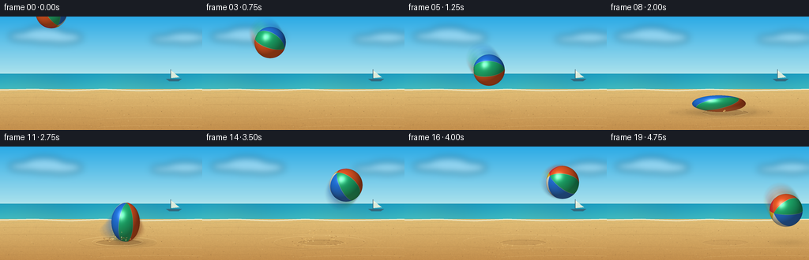
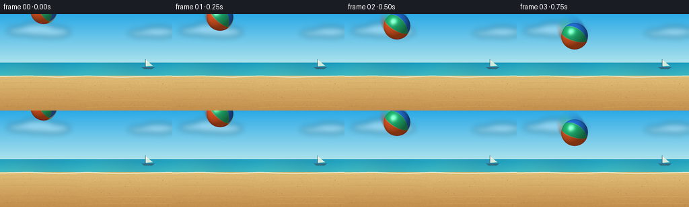

CODING AGENTS AS PIXEL WORLD MODELS
traex/GPT-5.6-Sol · phygen_030
点击播放 · 原生 RGB 像素
逐轮保存的候选
回放视频、检查图与代码变化。
每份候选均可单独播放。实际图片检查记录在下方工具轨迹中。
候选 01播放与检查图
点击播放 · 原生 RGB 像素

展开代码变化
--- 上一保存版本
+++ 本次保存版本
@@ -0,0 +1,288 @@
+from pathlib import Path
+import math
+import numpy as np
+from PIL import Image, ImageDraw, ImageFilter
+import artifact_io
+
+# Deterministic procedural animation; supersampling keeps geometric edges clean.
+W, H, N = 256, 144, 20
+S = 4
+WW, HH = W*S, H*S
+RNG = np.random.default_rng(3030)
+
+def sc(v):
+ return int(round(v*S))
+
+def rgba_layer():
+ return Image.new("RGBA", (WW, HH), (0, 0, 0, 0))
+
+def make_background():
+ yy = np.arange(HH, dtype=np.float32)[:, None] / S
+ xx = np.arange(WW, dtype=np.float32)[None, :] / S
+ arr = np.zeros((HH, WW, 3), dtype=np.float32)
+
+ # Clear cyan sky, gently bleached at the horizon.
+ sky_t = np.clip(yy / 79.0, 0, 1)
+ top = np.array([43, 170, 230], np.float32)
+ hor = np.array([183, 231, 237], np.float32)
+ sky = top[None, None, :] * (1-sky_t[:, :, None]) + hor[None, None, :] * sky_t[:, :, None]
+ arr[:] = sky
+
+ # Turquoise sea, with atmospheric horizontal gradation.
+ sea_mask = (yy >= 72) & (yy < 98)
+ st = np.clip((yy-72)/26, 0, 1)
+ sea_col = (np.array([31, 155, 188])[None,None,:]*(1-st[:,:,None]) +
+ np.array([73, 189, 188])[None,None,:]*st[:,:,None])
+ sea_col = sea_col + 4*np.sin(xx[:,:,None]*0.048 + np.array([0,1.2,2.1]))
+ arr = np.where(sea_mask[:,:,None], sea_col, arr)
+
+ # Warm sand plane. Fine deterministic grain prevents flat synthetic areas.
+ sand_mask = yy >= 92
+ sand_t = np.clip((yy-92)/52, 0, 1)
+ sand = (np.array([225, 190, 119])[None,None,:]*(1-sand_t[:,:,None]) +
+ np.array([194, 142, 76])[None,None,:]*sand_t[:,:,None])
+ noise_small = RNG.normal(0, 1, (H, W)).astype(np.float32)
+ noise = np.array(Image.fromarray(noise_small).resize((WW,HH), Image.Resampling.BILINEAR))
+ fine = RNG.normal(0, 1.7, (HH,WW)).astype(np.float32)
+ n = noise*2.0 + fine
+ sand = sand + n[:,:,None] * np.array([1.0,.82,.47])[None,None,:]
+ arr = np.where(sand_mask[:,:,None], sand, arr)
+ base = Image.fromarray(np.uint8(np.clip(arr, 0, 255)), "RGB").convert("RGBA")
+
+ # Soft clouds and haze.
+ clouds = rgba_layer(); d = ImageDraw.Draw(clouds)
+ for e in [(11,19,62,31),(29,13,83,33),(49,19,104,34),(191,24,233,33),(210,19,259,34)]:
+ d.ellipse(tuple(sc(v) for v in e), fill=(255,255,255,90))
+ clouds = clouds.filter(ImageFilter.GaussianBlur(sc(4.5)))
+ base.alpha_composite(clouds)
+
+ details = rgba_layer(); d = ImageDraw.Draw(details)
+ # Horizon and tiny distant sailboat: enough depth without distracting from the ball.
+ d.line([(0,sc(72)),(WW,sc(72))], fill=(224,245,241,170), width=sc(.7))
+ d.polygon([(sc(216),sc(68)),(sc(216),sc(78)),(sc(227),sc(77))], fill=(250,247,224,215))
+ d.line([(sc(216),sc(67)),(sc(216),sc(79))], fill=(66,91,104,220), width=sc(.7))
+ d.polygon([(sc(210),sc(79)),(sc(230),sc(79)),(sc(226),sc(82)),(sc(214),sc(82))], fill=(52,91,111,200))
+ # Shore foam and receding ripples.
+ d.line([(0,sc(93)),(sc(44),sc(92)),(sc(88),sc(94)),(sc(130),sc(92)),(sc(177),sc(94)),(WW,sc(92))],
+ fill=(240,242,218,210), width=sc(1.5))
+ d.line([(0,sc(97)),(sc(60),sc(96)),(sc(109),sc(97)),(sc(168),sc(95)),(WW,sc(97))],
+ fill=(172,169,113,80), width=sc(.7))
+ # Perspective sand striations and small grains.
+ for y in [104, 113, 129, 139]:
+ d.arc((sc(-25),sc(y-2),sc(122),sc(y+4)), 183, 352, fill=(150,105,56,45), width=sc(.55))
+ d.arc((sc(122),sc(y-1),sc(283),sc(y+5)), 188, 354, fill=(248,220,151,55), width=sc(.55))
+ grain_rng = np.random.default_rng(818)
+ for _ in range(115):
+ x = float(grain_rng.uniform(2,254)); y = float(grain_rng.uniform(99,143))
+ r = float(grain_rng.choice([.22,.3,.42,.55]))
+ c = (116,82,47,int(grain_rng.integers(35,100))) if grain_rng.random()<.67 else (250,221,156,80)
+ d.ellipse((sc(x-r),sc(y-r*.55),sc(x+r),sc(y+r*.55)), fill=c)
+ base.alpha_composite(details)
+ return base
+
+BACKGROUND = make_background()
+
+# Animation keyframes: a forceful descent, severe compression, elastic recoil and flight.
+poses = [
+ (65,-5,20,20), (71,5,20,20), (78,18,20,20), (86,33,20,20),
+ (96,50,20,20), (107,68,20,20), (119,86,20,20), (132,103,23,17),
+ (142,110.5,34,10.5), (149,112,39,9), (154,109,31,12),
+ (159,96,18,25), (166,77,19,23), (174,61,20,22), (182,49,21,21),
+ (191,44,21,21), (200,45.5,21,21), (209,52,21,21), (218,64,21,21), (227,81,21,21)
+]
+
+# Texture rotations. Increasing angle makes spin readable through moving colored panels.
+angles = [0.18 + i*0.38 for i in range(N)]
+
+COLORS = np.array([
+ [245,55,52], # red
+ [255,202,33], # yellow
+ [245,245,225], # ivory
+ [36,123,235], # blue
+ [32,190,119], # green
+ [244,92,37], # orange
+], dtype=np.float32)
+
+def rotation_matrix(angle):
+ # The ball tumbles predominantly around screen z and slightly end-over-end.
+ az = angle * .62 + .35
+ ax = -0.48 + math.sin(angle*.53)*.34
+ ay = math.cos(angle*.41)*.16
+ cz,sz = math.cos(az),math.sin(az)
+ cx,sx = math.cos(ax),math.sin(ax)
+ cy,sy = math.cos(ay),math.sin(ay)
+ Rz = np.array([[cz,-sz,0],[sz,cz,0],[0,0,1]],np.float32)
+ Rx = np.array([[1,0,0],[0,cx,-sx],[0,sx,cx]],np.float32)
+ Ry = np.array([[cy,0,sy],[0,1,0],[-sy,0,cy]],np.float32)
+ return Rz @ Rx @ Ry
+
+def ball_patch(cx, cy, rx, ry, angle, opacity=255, blur=0.0):
+ # Padding leaves room for filtering and a soft motion-blurred edge.
+ pad = max(3.0, blur*3 + 2)
+ x0 = math.floor((cx-rx-pad)*S); x1 = math.ceil((cx+rx+pad)*S)
+ y0 = math.floor((cy-ry-pad)*S); y1 = math.ceil((cy+ry+pad)*S)
+ pw,ph = x1-x0+1,y1-y0+1
+ X = (np.arange(pw, dtype=np.float32) + x0 + .5)/S
+ Y = (np.arange(ph, dtype=np.float32)[:,None] + y0 + .5)/S
+ u = (X[None,:]-cx)/rx
+ v = (Y-cy)/ry
+ rr = u*u + v*v
+ inside = rr <= 1.0
+ z = np.sqrt(np.maximum(0,1-rr))
+
+ # World surface vector uses positive y upward. Transform into the material frame.
+ q = np.stack([np.broadcast_to(u,rr.shape), -np.broadcast_to(v,rr.shape), z], axis=-1)
+ R = rotation_matrix(angle)
+ ql = q @ R
+ lon = np.arctan2(ql[...,2], ql[...,0])
+ sector_f = ((lon + math.pi) / (2*math.pi) * 6.0) % 6.0
+ sector = np.floor(sector_f).astype(np.int32)
+ col = COLORS[sector].copy()
+
+ # Thin pale seams emphasize the curved, stitched vinyl panels.
+ frac = sector_f - np.floor(sector_f)
+ seam = np.minimum(frac,1-frac)
+ seam_mix = np.clip((.026-seam)/.026,0,1)[...,None]
+ col = col*(1-seam_mix*.52) + np.array([255,246,215],np.float32)*seam_mix*.52
+
+ # Classic circular valve/pole cap, only where it is on the visible hemisphere.
+ cap = ql[...,1] > .91
+ cap_ring = (ql[...,1] > .885) & ~cap
+ col[cap] = np.array([248,244,221])
+ col[cap_ring] = col[cap_ring]*.47 + np.array([92,82,66])*.53
+
+ # Directional sunlight, glossy vinyl specular, edge falloff and warm ground bounce.
+ light = np.array([-0.46,0.64,0.61],np.float32); light /= np.linalg.norm(light)
+ ndl = np.maximum(0, q @ light)
+ hvec = light + np.array([0,0,1],np.float32); hvec /= np.linalg.norm(hvec)
+ spec = np.maximum(0,q @ hvec)**30
+ fresnel = (1-z)**2
+ shade = .49 + .48*ndl
+ col = col*shade[...,None] + 112*spec[...,None]
+ col += np.maximum(0,-q[...,1])[...,None]*np.array([16,9,0])[None,None,:]
+ col *= (1-.22*fresnel[...,None])
+
+ # Fine translucent highlight streak gives the object a tactile vinyl finish.
+ glint = np.exp(-(((u+.33)/.13)**2 + ((v+.34)/.32)**2)*2.2)
+ col = col*(1-.22*glint[...,None]) + 255*.22*glint[...,None]
+
+ # Anti-aliased alpha at the analytic edge (at supersampled resolution).
+ edge = np.clip((1-rr)*S*max(rx,ry)*.9, 0, 1)
+ alpha = edge * (opacity/255.0) * inside
+ out = np.zeros((ph,pw,4),dtype=np.uint8)
+ out[...,:3] = np.uint8(np.clip(col,0,255))
+ out[...,3] = np.uint8(np.clip(alpha*255,0,255))
+ patch = Image.fromarray(out,"RGBA")
+ if blur > 0:
+ patch = patch.filter(ImageFilter.GaussianBlur(sc(blur)))
+ return patch, (x0,y0)
+
+def composite_ball(scene, pose, angle, opacity=255, blur=0):
+ p,xy = ball_patch(*pose,angle,opacity,blur)
+ scene.alpha_composite(p,xy)
+
+def draw_shadow(scene, pose, frame):
+ cx,cy,rx,ry = pose
+ bottom = cy+ry
+ height = max(0,121-bottom)
+ # Shadow sharpens and widens dramatically as the ball meets the sand.
+ proximity = math.exp(-height/24)
+ if frame in (8,9,10): proximity = 1
+ sx = rx*(.68 + .62*proximity)
+ sy = 1.2 + 2.5*proximity
+ shadow = rgba_layer(); d = ImageDraw.Draw(shadow)
+ x = cx + 2.5 + height*.055; y = 121.7
+ for k,a in [(1.5,18),(1.05,38),(.68,60)]:
+ d.ellipse((sc(x-sx*k),sc(y-sy*k),sc(x+sx*k),sc(y+sy*k)),fill=(57,38,20,int(a*proximity)))
+ shadow=shadow.filter(ImageFilter.GaussianBlur(sc(1.25+height*.03)))
+ scene.alpha_composite(shadow)
+
+def draw_crater_and_ripples(scene, frame):
+ if frame < 8: return
+ age = frame-8
+ layer=rgba_layer(); d=ImageDraw.Draw(layer)
+ fade=max(0.0,1-age/15)
+ # Shallow indentation remains after rebound.
+ d.ellipse((sc(121),sc(118.2),sc(179),sc(125.7)),fill=(105,66,33,int(40*fade)))
+ d.arc((sc(120),sc(116.6),sc(180),sc(126.0)),2,178,fill=(255,222,148,int(115*fade)),width=sc(.85))
+ d.arc((sc(121),sc(118.2),sc(179),sc(126.4)),181,357,fill=(94,57,27,int(95*fade)),width=sc(1.0))
+ # Two rapidly expanding, flattened pressure ripples in the sand.
+ for lag in (0,2):
+ a=age-lag
+ if a>=0:
+ rad=24+a*8.5; al=int(max(0,125-a*14))
+ d.arc((sc(149-rad),sc(120-rad*.12),sc(149+rad),sc(122+rad*.12)),183,354,
+ fill=(252,220,149,al),width=sc(.75))
+ d.arc((sc(149-rad),sc(120-rad*.12+1),sc(149+rad),sc(123+rad*.12)),4,176,
+ fill=(118,77,37,int(al*.55)),width=sc(.55))
+ scene.alpha_composite(layer)
+
+# Fixed particle launch data, animated ballistically after the impact.
+prng=np.random.default_rng(904)
+particles=[]
+for i in range(72):
+ side=-1 if i%2==0 else 1
+ speed=prng.uniform(13,48)
+ vx=side*speed*prng.uniform(.58,1.15)
+ vy=-prng.uniform(13,42) * (1.1 if abs(vx)<24 else .76)
+ delay=prng.uniform(0,.20)
+ size=prng.uniform(.28,.85)
+ particles.append((vx,vy,delay,size,prng.random()))
+
+def draw_particles(scene, frame, foreground=False):
+ if frame < 8: return
+ # Deliberately slowed visual time so the 4 fps sequence clearly resolves the spray.
+ t=(frame-8)*.115 + .035
+ layer=rgba_layer(); d=ImageDraw.Draw(layer)
+ for i,(vx,vy,delay,size,tone) in enumerate(particles):
+ if (i%3==0) != foreground: continue
+ tt=t-delay
+ if tt<0 or tt>1.15: continue
+ x=149+vx*tt; y=120.5+vy*tt+35*tt*tt
+ if y>143 or x<0 or x>255: continue
+ fade=max(0,1-tt/1.2)
+ if tone<.55: color=(238,194,112,int(225*fade))
+ elif tone<.83: color=(151,103,54,int(210*fade))
+ else: color=(255,225,157,int(220*fade))
+ # Short radial streaks sell the force on early impact frames.
+ x2=x-vx*.018; y2=y-(vy+70*tt)*.018
+ d.line((sc(x2),sc(y2),sc(x),sc(y)),fill=color,width=max(1,sc(size)))
+ d.ellipse((sc(x-size),sc(y-size*.7),sc(x+size),sc(y+size*.7)),fill=color)
+ scene.alpha_composite(layer)
+
+def render_frame(i):
+ scene=BACKGROUND.copy()
+ pose=poses[i]
+ draw_crater_and_ripples(scene,i)
+ draw_particles(scene,i,False)
+ draw_shadow(scene,pose,i)
+
+ # Directional motion blur uses intermediate locations, leaving the main ball crisp.
+ if i>0:
+ p0=poses[i-1]; p1=pose
+ speed=math.hypot(p1[0]-p0[0],p1[1]-p0[1])
+ if speed>8 and i not in (8,9,10):
+ for j,t in enumerate((.18,.38,.60,.78)):
+ pp=tuple(p0[k]*(1-t)+p1[k]*t for k in range(4))
+ aa=int(18+9*j)
+ composite_ball(scene,pp,angles[i-1]*(1-t)+angles[i]*t,aa,1.0)
+ composite_ball(scene,pose,angles[i],255,0)
+ draw_particles(scene,i,True)
+
+ # Tiny impact flash of airborne pale sand right at maximum compression.
+ if i in (8,9):
+ veil=rgba_layer(); d=ImageDraw.Draw(veil)
+ alpha=30 if i==8 else 18
+ d.ellipse((sc(111),sc(113),sc(188),sc(126)),fill=(255,223,153,alpha))
+ veil=veil.filter(ImageFilter.GaussianBlur(sc(3.2)))
+ scene.alpha_composite(veil)
+
+ return np.asarray(scene.convert("RGB").resize((W,H),Image.Resampling.LANCZOS),dtype=np.uint8)
+
+def main():
+ frames=np.stack([render_frame(i) for i in range(N)],axis=0)
+ assert frames.shape==(20,144,256,3) and frames.dtype==np.uint8
+ artifact_io.save(frames,Path(__file__).resolve().parent)
+
+if __name__ == "__main__":
+ main()
候选 02播放与检查图
点击播放 · 原生 RGB 像素


展开代码变化
--- 上一保存版本
+++ 本次保存版本
@@ -47,7 +47,7 @@
n = noise*2.0 + fine
sand = sand + n[:,:,None] * np.array([1.0,.82,.47])[None,None,:]
arr = np.where(sand_mask[:,:,None], sand, arr)
- base = Image.fromarray(np.uint8(np.clip(arr, 0, 255)), "RGB").convert("RGBA")
+ base = Image.fromarray(np.uint8(np.clip(arr, 0, 255))).convert("RGBA")
# Soft clouds and haze.
clouds = rgba_layer(); d = ImageDraw.Draw(clouds)
@@ -172,7 +172,7 @@
out = np.zeros((ph,pw,4),dtype=np.uint8)
out[...,:3] = np.uint8(np.clip(col,0,255))
out[...,3] = np.uint8(np.clip(alpha*255,0,255))
- patch = Image.fromarray(out,"RGBA")
+ patch = Image.fromarray(out)
if blur > 0:
patch = patch.filter(ImageFilter.GaussianBlur(sc(blur)))
return patch, (x0,y0)
可观测工具轨迹
实际执行的命令与返回图片。
命令 1exit 0
/bin/bash -lc "cat prompt.txt && printf '\\n--- GENERATION_RULES.md ---\\n' && cat GENERATION_RULES.md"
命令 2exit 0
/bin/bash -lc "cat task_spec.json && printf '\\n--- files ---\\n' && find . -maxdepth 2 -type f -printf '%p\\n' | sort"
命令 3exit 0
/bin/bash -lc "which ffmpeg || true; which blender || true; python3 - <<'PY' mods=['numpy','PIL','cv2','cairo','skimage','matplotlib'] for m in mods: try: x=__import__(m); print(m,'OK',getattr(x,'__version__','')) except Exception as e: print(m,'NO',e) PY"
命令 4exit 0
/bin/bash -lc 'cat artifact_io.py'
命令 5exit 2
/bin/bash -lc "cat > generate.py <<'PY'
from pathlib import Path
import math
import numpy as np
from PIL import Image, ImageDraw, ImageFilter
import artifact_io
# Deterministic procedural animation; supersampling keeps geometric edges clean.
W, H, N = 256, 144, 20
S = 4
WW, HH = W*S, H*S
RNG = np.random.default_rng(3030)
def sc(v):
return int(round(v*S))
def rgba_layer():
return Image.new(\"RGBA\", (WW, HH), (0, 0, 0, 0))
def make_background():
yy = np.arange(HH, dtype=np.float32)[:, None] / S
xx = np.arange(WW, dtype=np.float32)[None, :] / S
arr = np.zeros((HH, WW, 3), dtype=np.float32)
# Clear cyan sky, gently bleached at the horizon.
sky_t = np.clip(yy / 79.0, 0, 1)
top = np.array([43, 170, 230], np.float32)
hor = np.array([183, 231, 237], np.float32)
sky = top[None, None, :] * (1-sky_t[:, :, None]) + hor[None, None, :] * sky_t[:, :, None]
arr[:] = sky
# Turquoise sea, with atmospheric horizontal gradation.
sea_mask = (yy >= 72) & (yy < 98)
st = np.clip((yy-72)/26, 0, 1)
sea_col = (np.array([31, 155, 188])[None,None,:]*(1-st[:,:,None]) +
np.array([73, 189, 188])[None,None,:]*st[:,:,None])
sea_col = sea_col + 4*np.sin(xx[:,:,None]*0.048 + np.array([0,1.2,2.1]))
arr = np.where(sea_mask[:,:,None], sea_col, arr)
# Warm sand plane. Fine deterministic grain prevents flat synthetic areas.
sand_mask = yy >= 92
sand_t = np.clip((yy-92)/52, 0, 1)
sand = (np.array([225, 190, 119])[None,None,:]*(1-sand_t[:,:,None]) +
np.array([194, 142, 76])[None,None,:]*sand_t[:,:,None])
noise_small = RNG.normal(0, 1, (H, W)).astype(np.float32)
noise = np.array(Image.fromarray(noise_small).resize((WW,HH), Image.Resampling.BILINEAR))
fine = RNG.normal(0, 1.7, (HH,WW)).astype(np.float32)
n = noise*2.0 + fine
sand += n[:,:,None] * np.array([1.0,.82,.47])[None,None,:]
arr = np.where(sand_mask[:,:,None], sand, arr)
base = Image.fromarray(np.uint8(np.clip(arr, 0, 255)), \"RGB\").convert(\"RGBA\")
# Soft clouds and haze.
clouds = rgba_layer(); d = ImageDraw.Draw(clouds)
for e in [(11,19,62,31),(29,13,83,33),(49,19,104,34),(191,24,233,33),(210,19,259,34)]:
d.ellipse(tuple(sc(v) for v in e), fill=(255,255,255,90))
clouds = clouds.filter(ImageFilter.GaussianBlur(sc(4.5)))
base.alpha_composite(clouds)
details = rgba_layer(); d = ImageDraw.Draw(details)
# Horizon and tiny distant sailboat: enough depth without distracting from the ball.
d.line([(0,sc(72)),(WW,sc(72))], fill=(224,245,241,170), width=sc(.7))
d.polygon([(sc(216),sc(68)),(sc(216),sc(78)),(sc(227),sc(77))], fill=(250,247,224,215))
d.line([(sc(216),sc(67)),(sc(216),sc(79))], fill=(66,91,104,220), width=sc(.7))
d.polygon([(sc(210),sc(79)),(sc(230),sc(79)),(sc(226),sc(82)),(sc(214),sc(82))], fill=(52,91,111,200))
# Shore foam and receding ripples.
d.line([(0,sc(93)),(sc(44),sc(92)),(sc(88),sc(94)),(sc(130),sc(92)),(sc(177),sc(94)),(WW,sc(92))],
fill=(240,242,218,210), width=sc(1.5))
d.line([(0,sc(97)),(sc(60),sc(96)),(sc(109),sc(97)),(sc(168),sc(95)),(WW,sc(97))],
fill=(172,169,113,80), width=sc(.7))
# Perspective sand striations and small grains.
for y in [104, 113, 129, 139]:
d.arc((sc(-25),sc(y-2),sc(122),sc(y+4)), 183, 352, fill=(150,105,56,45), width=sc(.55))
d.arc((sc(122),sc(y-1),sc(283),sc(y+5)), 188, 354, fill=(248,220,151,55), width=sc(.55))
grain_rng = np.random.default_rng(818)
for _ in range(115):
x = float(grain_rng.uniform(2,254)); y = float(grain_rng.uniform(99,143))
r = float(grain_rng.choice([.22,.3,.42,.55]))
c = (116,82,47,int(grain_rng.integers(35,100))) if grain_rng.random()<.67 else (250,221,156,80)
d.ellipse((sc(x-r),sc(y-r*.55),sc(x+r),sc(y+r*.55)), fill=c)
base.alpha_composite(details)
return base
BACKGROUND = make_background()
# Animation keyframes: a forceful descent, severe compression, elastic recoil and flight.
poses = [
(65,-5,20,20), (71,5,20,20), (78,18,20,20), (86,33,20,20),
(96,50,20,20), (107,68,20,20), (119,86,20,20), (132,103,23,17),
(142,110.5,34,10.5), (149,112,39,9), (154,109,31,12),
(159,96,18,25), (166,77,19,23), (174,61,20,22), (182,49,21,21),
(191,44,21,21), (200,45.5,21,21), (209,52,21,21), (218,64,21,21), (227,81,21,21)
]
# Texture rotations. Increasing angle makes spin readable through moving colored panels.
angles = [0.18 + i*0.38 for i in range(N)]
COLORS = np.array([
[245,55,52], # red
[255,202,33], # yellow
[245,245,225], # ivory
[36,123,235], # blue
[32,190,119], # green
[244,92,37], # orange
], dtype=np.float32)
def rotation_matrix(angle):
# The ball tumbles predominantly around screen z and slightly end-over-end.
az = angle * .62 + .35
ax = -0.48 + math.sin(angle*.53)*.34
ay = math.cos(angle*.41)*.16
cz,sz = math.cos(az),math.sin(az)
cx,sx = math.cos(ax),math.sin(ax)
cy,sy = math.cos(ay),math.sin(ay)
Rz = np.array([[cz,-sz,0],[sz,cz,0],[0,0,1]],np.float32)
Rx = np.array([[1,0,0],[0,cx,-sx],[0,sx,cx]],np.float32)
Ry = np.array([[cy,0,sy],[0,1,0],[-sy,0,cy]],np.float32)
return Rz @ Rx @ Ry
def ball_patch(cx, cy, rx, ry, angle, opacity=255, blur=0.0):
# Padding leaves room for filtering and a soft motion-blurred edge.
pad = max(3.0, blur*3 + 2)
x0 = math.floor((cx-rx-pad)*S); x1 = math.ceil((cx+rx+pad)*S)
y0 = math.floor((cy-ry-pad)*S); y1 = math.ceil((cy+ry+pad)*S)
pw,ph = x1-x0+1,y1-y0+1
X = (np.arange(pw, dtype=np.float32) + x0 + .5)/S
Y = (np.arange(ph, dtype=np.float32)[:,None] + y0 + .5)/S
u = (X[None,:]-cx)/rx
v = (Y-cy)/ry
rr = u*u + v*v
inside = rr <= 1.0
z = np.sqrt(np.maximum(0,1-rr))
# World surface vector uses positive y upward. Transform into the material frame.
q = np.stack([np.broadcast_to(u,rr.shape), -np.broadcast_to(v,rr.shape), z], axis=-1)
R = rotation_matrix(angle)
ql = q @ R
lon = np.arctan2(ql[...,2], ql[...,0])
sector_f = ((lon + math.pi) / (2*math.pi) * 6.0) % 6.0
sector = np.floor(sector_f).astype(np.int32)
col = COLORS[sector].copy()
# Thin pale seams emphasize the curved, stitched vinyl panels.
frac = sector_f - np.floor(sector_f)
seam = np.minimum(frac,1-frac)
seam_mix = np.clip((.026-seam)/.026,0,1)[...,None]
col = col*(1-seam_mix*.52) + np.array([255,246,215],np.float32)*seam_mix*.52
# Classic circular valve/pole cap, only where it is on the visible hemisphere.
cap = ql[...,1] > .91
cap_ring = (ql[...,1] > .885) & ~cap
col[cap] = np.array([248,244,221])
col[cap_ring] = col[cap_ring]*.47 + np.array([92,82,66])*.53
# Directional sunlight, glossy vinyl specular, edge falloff and warm ground bounce.
light = np.array([-0.46,0.64,0.61],np.float32); light /= np.linalg.norm(light)
ndl = np.maximum(0, q @ light)
hvec = light + np.array([0,0,1],np.float32); hvec /= np.linalg.norm(hvec)
spec = np.maximum(0,q @ hvec)**30
fresnel = (1-z)**2
shade = .49 + .48*ndl
col = col*shade[...,None] + 112*spec[...,None]
col += np.maximum(0,-q[...,1])[...,None]*np.array([16,9,0])[None,None,:]
col *= (1-.22*fresnel[...,None])
# Fine translucent highlight streak gives the object a tactile vinyl finish.
glint = np.exp(-(((u+.33)/.13)**2 + ((v+.34)/.32)**2)*2.2)
col = col*(1-.22*glint[...,None]) + 255*.22*glint[...,None]
# Anti-aliased alpha at the analytic edge (at supersampled resolution).
edge = np.clip((1-rr)*S*max(rx,ry)*.9, 0, 1)
alpha = edge * (opacity/255.0) * inside
out = np.zeros((ph,pw,4),dtype=np.uint8)
out[...,:3] = np.uint8(np.clip(col,0,255))
out[...,3] = np.uint8(np.clip(alpha*255,0,255))
patch = Image.fromarray(out,\"RGBA\")
if blur > 0:
patch = patch.filter(ImageFilter.GaussianBlur(sc(blur)))
return patch, (x0,y0)
def composite_ball(scene, pose, angle, opacity=255, blur=0):
p,xy = ball_patch(*pose,angle,opacity,blur)
scene.alpha_composite(p,xy)
def draw_shadow(scene, pose, frame):
cx,cy,rx,ry = pose
bottom = cy+ry
height = max(0,121-bottom)
# Shadow sharpens and widens dramatically as the ball meets the sand.
proximity = math.exp(-height/24)
if frame in (8,9,10): proximity = 1
sx = rx*(.68 + .62*proximity)
sy = 1.2 + 2.5*proximity
shadow = rgba_layer(); d = ImageDraw.Draw(shadow)
x = cx + 2.5 + height*.055; y = 121.7
for k,a in [(1.5,18),(1.05,38),(.68,60)]:
d.ellipse((sc(x-sx*k),sc(y-sy*k),sc(x+sx*k),sc(y+sy*k)),fill=(57,38,20,int(a*proximity)))
shadow=shadow.filter(ImageFilter.GaussianBlur(sc(1.25+height*.03)))
scene.alpha_composite(shadow)
def draw_crater_and_ripples(scene, frame):
if frame < 8: return
age = frame-8
layer=rgba_layer(); d=ImageDraw.Draw(layer)
fade=max(0.0,1-age/15)
# Shallow indentation remains after rebound.
d.ellipse((sc(121),sc(118.2),sc(179),sc(125.7)),fill=(105,66,33,int(40*fade)))
d.arc((sc(120),sc(116.6),sc(180),sc(126.0)),2,178,fill=(255,222,148,int(115*fade)),width=sc(.85))
d.arc((sc(121),sc(118.2),sc(179),sc(126.4)),181,357,fill=(94,57,27,int(95*fade)),width=sc(1.0))
# Two rapidly expanding, flattened pressure ripples in the sand.
for lag in (0,2):
a=age-lag
if a>=0:
rad=24+a*8.5; al=int(max(0,125-a*14))
d.arc((sc(149-rad),sc(120-rad*.12),sc(149+rad),sc(122+rad*.12)),183,354,
fill=(252,220,149,al),width=sc(.75))
d.arc((sc(149-rad),sc(120-rad*.12+1),sc(149+rad),sc(123+rad*.12)),4,176,
fill=(118,77,37,int(al*.55)),width=sc(.55))
scene.alpha_composite(layer)
# Fixed particle launch data, animated ballistically after the impact.
prng=np.random.default_rng(904)
particles=[]
for i in range(72):
side=-1 if i%2==0 else 1
speed=prng.uniform(13,48)
vx=side*speed*prng.uniform(.58,1.15)
vy=-prng.uniform(13,42) * (1.1 if abs(vx)<24 else .76)
delay=prng.uniform(0,.20)
size=prng.uniform(.28,.85)
particles.append((vx,vy,delay,size,prng.random()))
def draw_particles(scene, frame, foreground=False):
if frame < 8: return
# Deliberately slowed visual time so the 4 fps sequence clearly resolves the spray.
t=(frame-8)*.115 + .035
layer=rgba_layer(); d=ImageDraw.Draw(layer)
for i,(vx,vy,delay,size,tone) in enumerate(particles):
if (i%3==0) "'!= foreground: continue
tt=t-delay
if tt<0 or tt>1.15: continue
x=149+vx*tt; y=120.5+vy*tt+35*tt*tt
if y>143 or x<0 or x>255: continue
fade=max(0,1-tt/1.2)
if tone<.55: color=(238,194,112,int(225*fade))
elif tone<.83: color=(151,103,54,int(210*fade))
else: color=(255,225,157,int(220*fade))
# Short radial streaks sell the force on early impact frames.
x2=x-vx*.018; y2=y-(vy+70*tt)*.018
d.line((sc(x2),sc(y2),sc(x),sc(y)),fill=color,width=max(1,sc(size)))
d.ellipse((sc(x-size),sc(y-size*.7),sc(x+size),sc(y+size*.7)),fill=color)
scene.alpha_composite(layer)
def render_frame(i):
scene=BACKGROUND.copy()
pose=poses[i]
draw_crater_and_ripples(scene,i)
draw_particles(scene,i,False)
draw_shadow(scene,pose,i)
# Directional motion blur uses intermediate locations, leaving the main ball crisp.
if i>0:
p0=poses[i-1]; p1=pose
speed=math.hypot(p1[0]-p0[0],p1[1]-p0[1])
if speed>8 and i not in (8,9,10):
for j,t in enumerate((.18,.38,.60,.78)):
pp=tuple(p0[k]*(1-t)+p1[k]*t for k in range(4))
aa=int(18+9*j)
composite_ball(scene,pp,angles[i-1]*(1-t)+angles[i]*t,aa,1.0)
composite_ball(scene,pose,angles[i],255,0)
draw_particles(scene,i,True)
# Tiny impact flash of airborne pale sand right at maximum compression.
if i in (8,9):
veil=rgba_layer(); d=ImageDraw.Draw(veil)
alpha=30 if i==8 else 18
d.ellipse((sc(111),sc(113),sc(188),sc(126)),fill=(255,223,153,alpha))
veil=veil.filter(ImageFilter.GaussianBlur(sc(3.2)))
scene.alpha_composite(veil)
return np.asarray(scene.convert("RGB").resize((W,H),Image.Resampling.LANCZOS),dtype=np.uint8)
def main():
frames=np.stack([render_frame(i) for i in range(N)],axis=0)
assert frames.shape==(20,144,256,3) and frames.dtype==np.uint8
artifact_io.save(frames,Path(__file__).resolve().parent)
if __name__ == "__main__":
main()
PY
python3 generate.py
ls -lh pixels.npz inspection.png transition_check.png index.html frames/00.png frames/09.png frames/19.png'命令 6exit 0
/bin/bash -lc "python3 generate.py && ls -lh pixels.npz inspection.png transition_check.png index.html frames/00.png frames/09.png frames/19.png && python3 - <<'PY'
import numpy as np
from PIL import Image
z=np.load('pixels.npz')['pixels']
print('pixels',z.shape,z.dtype,hex(int(z.min())),hex(int(z.max())))
for i in [0,6,8,9,10,11,15,19]:
a=np.array(Image.open(f'frames/{i:02d}.png'))
print(i,a.shape,a.dtype,a.min(),a.max(),float(a.mean()),len(np.unique(a.reshape(-1,3),axis=0)))
PY"命令 7exit 0
/bin/bash -lc "python3 - <<'PY'
from PIL import Image
import numpy as np
im=np.array(Image.open('inspection.png'))
print('inspection',im.shape,im.dtype)
# Frame deltas; no frozen sequence and forceful impact should peak around contact.
a=np.stack([np.array(Image.open(f'frames/{i:02d}.png')).astype(np.int16) for i in range(20)])
d=np.abs(np.diff(a,axis=0)).mean((1,2,3))
print('mean frame deltas:',np.round(d,2).tolist())
print('all unique:',len({x.tobytes() for x in a})==20)
PY"命令 8exit 0
/bin/bash -lc "sha256sum pixels.npz frames/*.png > .tmp/before.sha256; python3 generate.py; sha256sum pixels.npz frames/*.png > .tmp/after.sha256; diff -u .tmp/before.sha256 .tmp/after.sha256 && echo 'deterministic: yes'"
保存候选 2 份；完成命令 8 次；可验证图片返回 0 张。原始 API 响应与完整日志保留在本地。